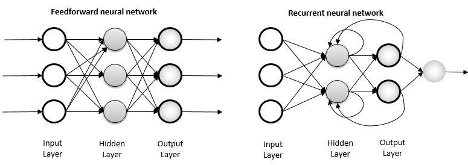

Jami Pekkanen, Juraj Simko et al.
Lecture 7
2021-5-05T10+02
Cyberspace
30 minutes discussion, some rough outline but only to get started.
Starting next week, we'll send slots over email.
Prepare one question for us!
do we have a model for how the different observations or features are aggregated in forming the idea of an object, other than doing something like training a classification neural network and then working on the inverse problem? Is it even possible to study this independently of some specific goal or game, for example modeling a cognitive function as a thing in itself?
Yes, many! In general known as "unsupervised learning".
I.e. try to find some structure in the data without clear goals.
Neglected in this course. Some common approaches: k-means clustering, SOM, ICA. Some links to neural organization.
Largely neglected in the field, potential for new findings!
how is “recurrence in a network” differentiated from “recurrence in a unit”? Specifically, is there a conceptual distinction separate from an implementation distinction?
https://www.researchgate.net/figure/Feed-forward-and-recurrent-ANN-architecture_fig1_315111480
do you think there is anything important about a scenario where, in reinforcement learning, we would reward and not penalize any action?
No fundamental difference. Common convention is that 0 is neutral, but only relative value of reward and penalty matter.
Practical difference: initial high values (w.r.t. "real" reward) encourages exploration.
There are many potential methods to use for cognitive modelling. When you face a new problem how do you approach it?
No clear approach to selecting the approach. Often a problem is sought for an approach (and this is just fine!).
My typical heuristic is to figure out what to optimize and see if it has a timeish dimension or not.
how do you choose best model? Seems like prediction accuracy in this particular case might not be the only the only thing that matters if the goal is to understand some phenomena.
For science: Occam's razor, elegance, generalizability, prediction accuracy.
For "engineering": about inverse.
No clear criteria, mostly up to science as a community
When you manage to build a model that seems to accurately predict or model a cognitive problem, how do you / how can you make inferences based on it?
Inference ≈ find out what parameter values explain the data best
Not fundamentally different from e.g. regression inference for a statistically formulated model.
In practice not that often used, but more a matter of lacking implementations and tradition.
ANN's don't have a temporal component in similar way to biological neurons. ... I've read about some neuron simulation software (e.g. Neuron) simulate that type of behaviour for neuroscience research but not outside that. What are the reasons this kind of approach does not work for modelling cognition given our brains seem to heavily rely on it? Von Neumann architecture would be inefficient for that type of calculation so it doesn't make sense, or some other reasons?
Nobody's managed to make them work/learn in practice AFAIK. A major deal if you can. Computing performance not the bottleneck currently.